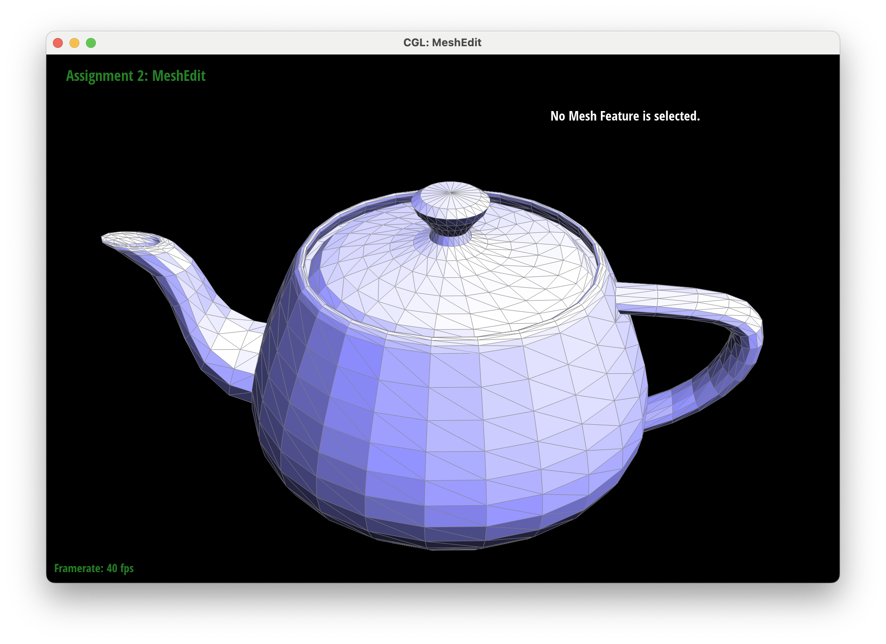
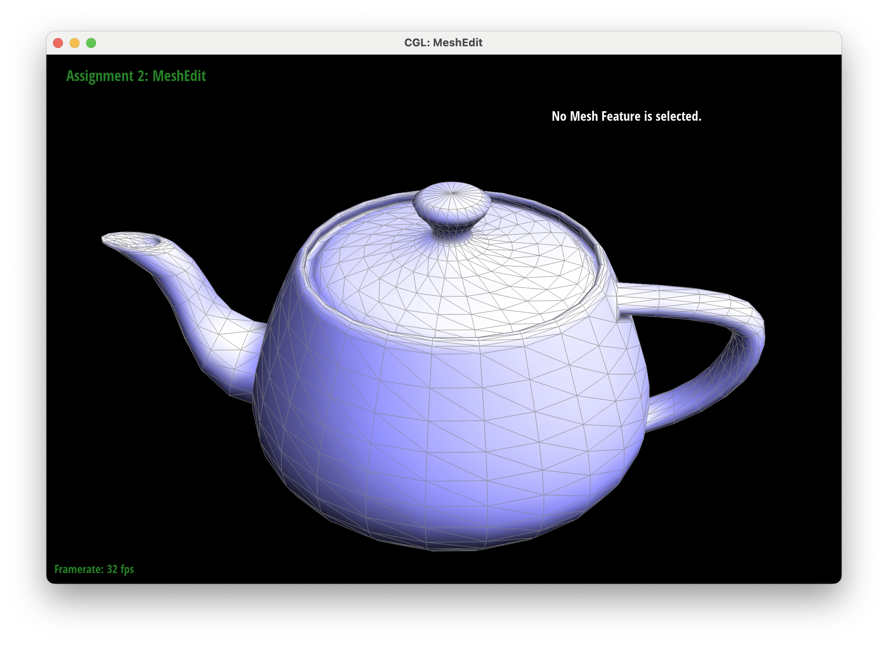
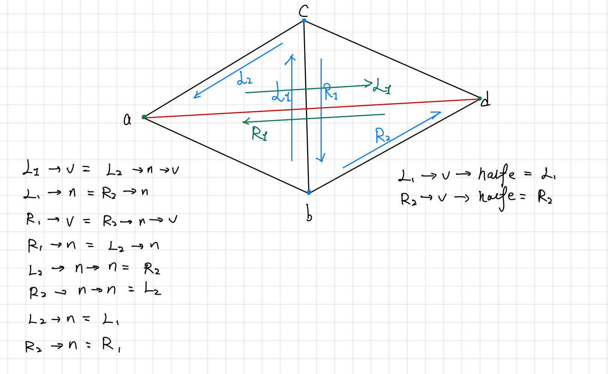
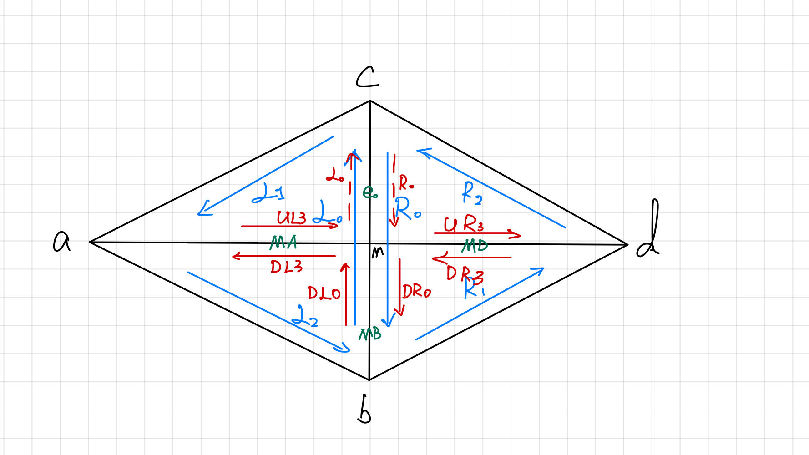

Homework Description
In this assignment, you will explore topics on geometric modeling
covered in lecture. You will build Bezier curves and surfaces using de
Casteljau algorithm, manipulate triangle meshes represented by half-edge
data structure, and implement loop subdivision.
Section I: Bezier Curves and Surfaces
Part 1: Bezier Curves with 1D de Casteljau Subdivision (10 pts)
explanation of De Casteljau's algorithm
De Casteljau's algorithm is a method used to evaluate points on a Bézier
curve. Bézier curves are defined by a set of control points, and De
Casteljau's algorithm recursively divides the control points to
calculate intermediate points on the curve. The process involves
creating a set of linear interpolations between control points and
repeating this process until a single point is obtained—the evaluated
point on the Bézier curve.
Implementation
We followed the instruction on the spec: took in a
std::vector<Vector2D> controlPoints
of length n, applied the function \[ p_i' = \text{lerp}(p_i, p_{i+1}, t)
= (1 - t) * p_i + t * p_{i+1} \] to every point
<Vector2D> p_i and p_i_1, returning a new
<Vector2D> controlPoint curr. We will then push back "curr" to a new
std::vector <Vector2D> nextlevel
of length p - 1. Finally, we will return "nextlevel".
Screenshots
The curve with 6 control points are written in
bzc/curve3.bzc.
Part 2: Bezier Surfaces with Separable 1D de Casteljau (15 pts)
de Casteljau algorithm to Bezier surfaces
De Casteljau's algorithm, which is initially designed for Bézier curves,
can be extended to evaluate points on Bézier surfaces in a similar
recursive manner as in part1. Bézier surfaces are defined by a grid n*n
of control points, and the algorithm iteratively subdivides this grid to
calculate points on the surface.
Algorithm
std::vector<Vector3D>
BezierPatch::evaluateStep(std::vector<Vector3D> const &points,
double t): This function simulates one step of de Casteljau algorithm (same
functionality as part1), except that we are now taking in
std::vector<Vector3D> instead of
<Vector2D>.
Vector3D BezierPatch::evaluate1D(std::vector<Vector3D> const
&points, double t): calls
evaluateStep
one row of control points using a given parameter
t until we get
one final point for each row.(This must happen because each time we call
evaluateStep
on a vector of n points, the function will return a vector of n-1
points.)
Vector3D BezierPatch::evaluate(double u, double v)
In this function, we first loop through each rool of the N * N grid
controlPoints and call
evaluate1D
with the input
u on each
roll. We will get n returning points from the n loops and form a new
vector Final.
Finally, we call
evaluate1D
on
Final using
the input v.
(applying De Casteljau's algorithm across columns.)
Result
Section II: Triangle Meshes and Half-Edge Data Structure
Part 3: Area-Weighted Vertex Normals (10 pts)
Implementation
We first get the face the caller vertex belongs by calling
HalfedgeCIter he = halfedge();. We then iterate through all the other 5 triangles argound the caller
vertex by using the line
he = he->twin()->next();
(The halfedges he pointed to are shown in the following graph.) For each
triangle, we calculate the normal vector of it and add it to the
variable n. At
last, we return the normalized
n.
Result


Part 4: Edge Flip (15 pts)
Implementation
The function takes an iterator pointing to a halfedge as input. This
halfedge represents the edge that will be flipped.
Steps
-
Check for Boundary Edge: first checks if the input edge is a boundary
edge. If it is, flipping is not possible, so the function simply
returns the original edge iterator.
-
Get Halfedge: obtains iterators for several halfedges surrounding the
edge to be flipped, namely 3 halfedges for Left and 3 halfedges for
Right. These iterators are used to update connections between
halfedges after the flip.
-
Get Vertex: obtains iterators for the four vertices in the diagram
connected to the halfedges. These iterators are used to update the
vertices' halfedge pointers after the flip.
-
Get Face: obtains iterators for the two faces, namely Left and Right,
that the two halfedges being flipped belong to. These iterators are
used to update the faces' halfedge pointers after the flip.
-
Update Halfedge Neighbors (via
setNeighbors()): updates the neighbor pointers of the four halfedges involved in
the flip. This step reconfigures the connections between halfedges to
reflect the flipped edge.
-
Update Halfedge Next Pointers: updates the "next" pointers of two
halfedges to reverse their order in the counter-clockwise direction
around their respective faces.
-
Update Vertex Halfedge Pointers: updates the "halfedge" pointers of
the four vertices involved in the flip to point to their new
corresponding halfedges after the flip.
-
Update Face Halfedge Pointers: updates the "halfedge" pointers of the
two faces involved in the flip to point to their new starting
halfedges after the flip.
-
Return Flipped Edge: The function returns the iterator pointing to the
original edge, which now represents the flipped edge.
Debugging
We used the diagram to help us understand the connections between the 4
halfedges and 4 vertices involved in the flip. We also used the diagram
to help us understand the connections between the 2 faces involved in
the flip.

Result
Task 5: Edge Split (15 pts)
Steps
Please refer to the diagram below for the notations of the vertices,
halfedges and faces as we have created new ones.
For your reference, vertices starting with "M" means "from the
Midpoint", "U" means "from the Upper face", "D" means "from the Down
face", "L" means "from the Left face", "R" means "from the Right face".

-
Create New Mesh Elements: The function first creates several new
elements to be inserted into the mesh during the split:
-
A new vertex ("MID") to represent the midpoint of the split edge.
-
Three new edges ("MD", "MB", "MA") to form the new edges after the
split.
-
Six new halfedges ("UR3", "DR3", "DR0", "DL0", "DL3", "UL3") to
connect the new vertex and edges.
-
Two new faces ("UP", "DOWN") to fill the gaps created by the
split.
-
Get Iterators for Existing Elements: The function obtains iterators
for existing halfedges, faces, and vertices surrounding the edge to be
split. These iterators are used to update connections after the split.
-
Position the New Vertex The position of the new vertex ("MID") is set
to the average of the positions of the two original vertices connected
by the edge.
-
Set Initial Halfedge Pointers: The "halfedge" pointer of the new
vertex ("MID") is set to point to one of the original halfedges
("L0_OLD"). The "halfedge" pointer of the original vertex's vertex is
updated to point to a new halfedge on the opposite face ("R1_OLD").
-
Set Face Halfedge Pointers: The "halfedge" pointers of the new and
existing faces are updated to point to appropriate halfedges, ensuring
correct face-vertex relationships.
-
Set Edge Halfedge Pointers: The "halfedge" pointers of the new edges
are set to point to their corresponding halfedges.
-
Update Existing Halfedge Neighbors: The neighbor pointers of the
existing halfedges are modified to accommodate the new vertex and
edges, maintaining mesh connectivity.
-
Set New Halfedge Neighbors: The neighbor pointers of the new halfedges
are set to correctly connect them to the existing mesh elements,
forming the new edges and faces.
-
Return the New Vertex: The function returns an iterator pointing to
the newly inserted vertex ("MID").
Result
Task 6: Loop Subdivision for Mesh Upsampling (25 pts)